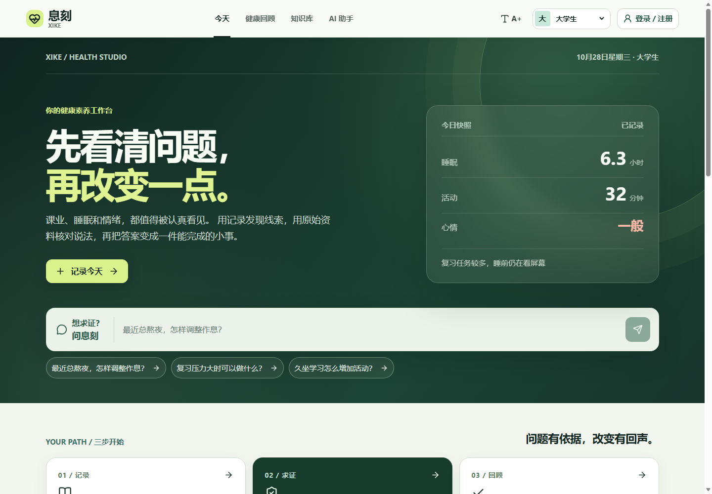
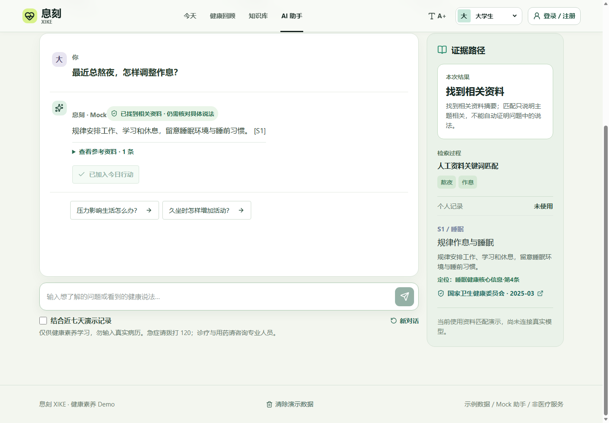

XIKE / EVIDENCE FIRST HEALTH LITERACY
息刻
从一条健康疑问出发，走过记录、求证、行动与回顾。面向大学生、职场人士及年长者的 AI 原生健康素养 Web 应用。
技术文档 · 参赛提交版
01 / 项目概述与需求分析
让健康信息有来处，让日常变化看得见
用户遇到“熬夜后如何安排睡眠”“久坐如何开始活动”之类问题时，常在碎片信息、个人记录和实际行动之间反复跳转。息刻把这三个环节接到同一个工作台。
大学生
职场人士
年长者
需求到功能的映射
真实任务 交互设计 边界 保存近一个月状态 最近 30 天任意日期编辑；7/30 天回顾 缺失日留空，不生成疾病风险分数 求证健康说法 助手展示摘要、命中词、原文定位与链接 主题相关不等于证明问题中的每项说法 把信息转为行动 保存可执行小行动，标记完成 不替代专业诊疗 找回往日问题 保存、检索与删除历史提问 默认只显示最近 100 条
四种演示画像均为虚构内容。当前正式邮件验证、生产级鉴权与医疗服务不在作品能力声明内。

图 1 · 首页记录与提问入口（Mock 演示）
02 / 系统架构设计
前后端分离，同源 API，敏感配置留在服务端
React + TypeScript
→ Axios /api
→ Spring Boot
→ H2 文件库
前端工程
后端工程
工作区
运行配置
主要数据对象
对象 用途 checkin 日期、睡眠、活动、心情与简短备注；仅最近 30 天可编辑 saved_question 问题、回答、来源与证据路径，按工作区隔离 action_item 用户选定的小行动与完成状态 account_profile / account_session 邮箱演示身份、画像和摘要会话令牌
开发阶段使用 H2 本地文件；切换 MySQL 仍需驱动、schema 和备份恢复验证。
03 / AI 技术方案
先检索可追溯摘要，再决定是否让模型生成
问题与画像
→ 规则分流
→ 人工摘要检索
→ 模型 / Mock
→ 引用与边界
资料层： 7 条人工整理的国家卫生健康委员会资料卡片记录标题、机构、年月、原文定位、链接、摘要和小行动。检索层： 按主题词匹配与简易得分选取最多两条。检索痕迹显示命中词和匹配范围；无命中时拒绝生成事实性结论。安全分流： 胸痛、呼吸困难等紧急情形直接提示线下求助；用药问题转向医生或药师；这两类不调用模型。生成层： 默认 Mock 可离线复现。可选兼容模型适配器只发送问题与本次命中摘要；用户主动授权时追加相关的七日记录汇总。输出须含本次资料的合法编号，否则回退 Mock。成本约束： 单次请求限制输出 token；后端进程按 UTC 日限制模型尝试次数，默认 100 次，可设为 0 禁用。重启会重置该计数，正式预算仍应在供应商侧设置。
为什么这样选型
当前不是向量 RAG，也未完成真实模型联调。合法引用编号只能验证“引用来自本次资料”，不能自动证明每一句医学事实。正式接入时需在后端设置 AI_PROVIDER、AI_CHAT_URL、AI_MODEL、AI_API_KEY。

图 2 · 助手回答、原始出处与检索路径（Mock 演示）
04 / 核心功能实现
一次可回放的“记录 - 求证 - 行动 - 回顾”闭环
01 记录
02 求证
03 行动
04 回顾
账号与隐私交互
邮箱注册/登录共用验证码。默认本机模式在页面显示演示码；它不发送邮件，也不证明邮箱归属。账号首次登录选择年龄段和身份；宽泛健康分类可跳过，保存时需要单独同意。退出、删除问题、清除工作区及删除账号均有对应数据路径。
演示路径
切换大学生与职场人士画像，进入记录页补记一日睡眠和活动。
在助手中询问“熬夜后怎么安排睡眠”，打开来源，查看本次匹配依据。
询问资料范围外的问题，观察拒答；再测试用药边界。
保存一个小行动并完成，回到月度回顾查看覆盖率与趋势。
使用虚构邮箱演示本机账号和首次资料填写，观察独立空白工作区。
05 / 测试与部署
已验证的工程质量，以及明确的上线门槛
29 项后端测试
PASS 前端格式 / Lint / 构建
H2 本地持久化
测试覆盖
数据库启动、画像隔离、7/30 天回顾、记录编辑、历史提问、行动管理、输入校验、账号数据删除、可选 SMTP 的伪造发送器、模型适配器与无效引用回退、每日模型调用上限。桌面与 390px 窄屏已做本机浏览器流程检查。
复现命令
cd frontend && npm.cmd ci && npm.cmd run format:check && npm.cmd run lint && npm.cmd run buildcd backend && .\mvnw.cmd verifyWindows PowerShell 使用 npm.cmd；无需修改执行策略。
腾讯云部署准备
用户截图确认了中国香港三区的 Lighthouse 实例（2 核、2GB、40GB SSD），公网 IPv4 已分配。目标为服务器入口提供前端静态文件并代理同源 /api，Spring Boot 仅监听回环地址；操作系统、域名和登录方式待确认。当前未发布公网实例。
已生成本机上传包 output/release/xike-runtime.zip，内含 JAR、前端静态文件与部署示例；生成包不等于已部署。
现有邮箱账号和 H2 文件库只适合本机 Demo。公开部署前必须完成真实邮件投递、滥用限制、跨站请求防护、敏感数据保护、备份恢复、来源及健康文案审核，以及真实模型与费用联调。
06 / 创新点与评估
创新集中在可解释的交互路径与谨慎的生成边界
应用创新 · 证据工作台
交互创新 · 可见的依据
技术创新 · 分层 AI 适配
隐私设计 · 主动授权
固定问题评测设计
测试集覆盖睡眠、活动、情绪、健康信息、药物、急症及资料外问题。观察是否检索到预期资料、是否拒答或转介、是否产生合法引用，以及异常时是否回退。当前为本地规则与模拟提供商评测；真实模型的逐句事实核验与临床专家评审尚未完成。
后续可量化指标
指标 评估方法 资料路径正确率 专家核对回答与原文定位的对应关系 任务完成率 观察不同年龄用户能否完成记录、求证、行动 安全边界 药物、急症、证据不足问题的拒答与转介率 费用与延迟 真实模型调用后记录供应商用量和响应时间
07 / 总结、展望与资料来源
已形成可运行作品，真实服务联调仍需完成
息刻已经有可运行的前后端、持久化演示数据、独立助手、来源展示、账号演示和自动化测试。当前应以“健康素养演示系统”向评审说明能力，不能将实验适配器称为已上线的真实大模型。
下一阶段
确认 Lighthouse 操作系统与 TokenHub 服务；由用户在自己的控制台开通并保管密钥，后端环境注入，完成真实请求、用量与故障回退联调。
审核 7 条人工摘要与原文的逐项对应；如进入公开使用，补齐专业审校、正式邮箱验证、账号和数据安全。
以参赛者账号在比赛后台核对实际提交入口、截止时间及文件格式；上传公开仓库或提供评审权限，并录制完整演示。
主要资料
[1] 国家卫生健康委员会，《中国公民健康素养——基本知识与技能（2024 年版）》：nhc.gov.cn / 2024 健康素养
[2] 国家卫生健康委员会，《睡眠健康核心信息及释义》：nhc.gov.cn / 睡眠健康
[3] 国家卫生健康委员会，《老年失能预防核心信息》：nhc.gov.cn / 老年失能预防
[4] 腾讯云，《TokenHub API 使用说明》：cloud.tencent.com / TokenHub API
[5] 腾讯云，《OpenAI Chat Completions 兼容接口》：cloud.tencent.com / 接口字段
文档依据本仓库代码与 2026-10-28 本机构建结果编写。团队：暴力炸；参赛者：汪善知；学校：广州南方学院。指导教师信息未提供。具体参赛规则以比赛后台为准。